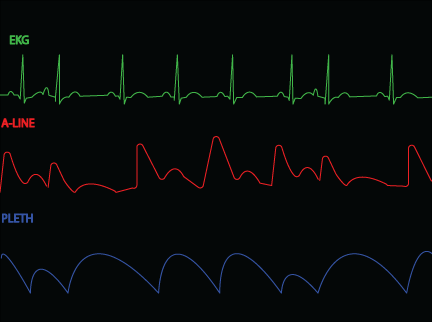
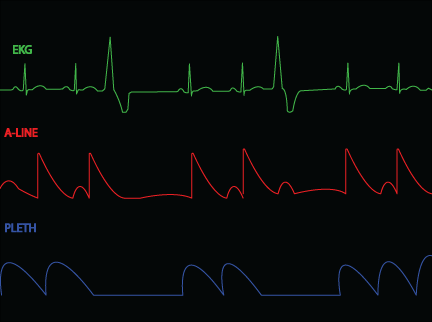
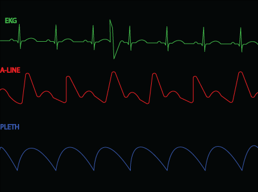

Learn how to identify real arrythmias from artifact in this section.
It is important to use your resources when analyzing EKG. You can use all your leads, A-line, Pleth & calipers to help you determine real arrythmias from artifact.
The image below is of normal sinus rhythm. The two waveforms below the EKG is an A-line and Pleth. An A-line is reliable source to visualuze perfusion. The pleth is another great resource but can sometimes be unreliable.
Studying the image above you can see that each wave correlate with each QRS complex.
This image above is of normal sinus rhythm and PAC's. There are two of them, can you see them? How about how the coorelating waveforms are effected by the PAC's?
In this image of ventricular trigemeny, see how the A-line and pleth flattten out. That is because these PVC's did not perfuse, and this is how it is reflected in the waveforms.
In this image, one might interpret as sinus bradycardia, we can see from the A-line & Pleth that there is something more going on. Neither the A-line or Pleth are showing perfusion. This is called PEA or Pulseless Electrical Activity.
In the image above you can see that the A-line & pleth are not perfusing. When you look at the EKG the QRS are wide and some what difficult to discern. This arrythmia is a pulseless one- ventricualr tachycardia.
In the image above you can see what may be mis-interpreted as a single PVC. Sometimes you may have artifact on all leads, while other times you may have artifact in one lead while the others show normal sinus rhythm. When all your leads show artifact dont forget to use your other resources. You can see from the A-line & pleth that there was no premature beats. So in the example above this is normal sinus rhythm with artifact.